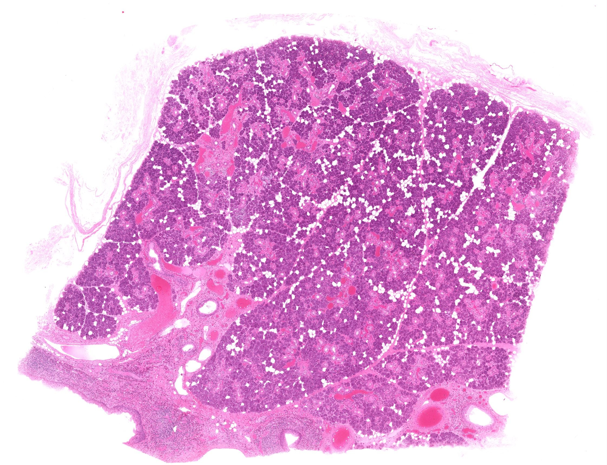
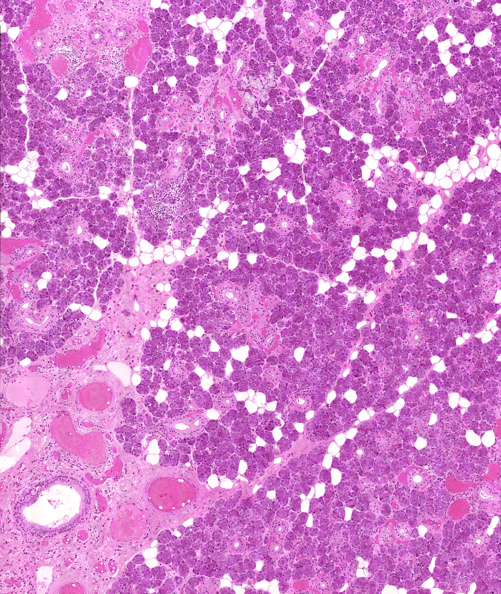
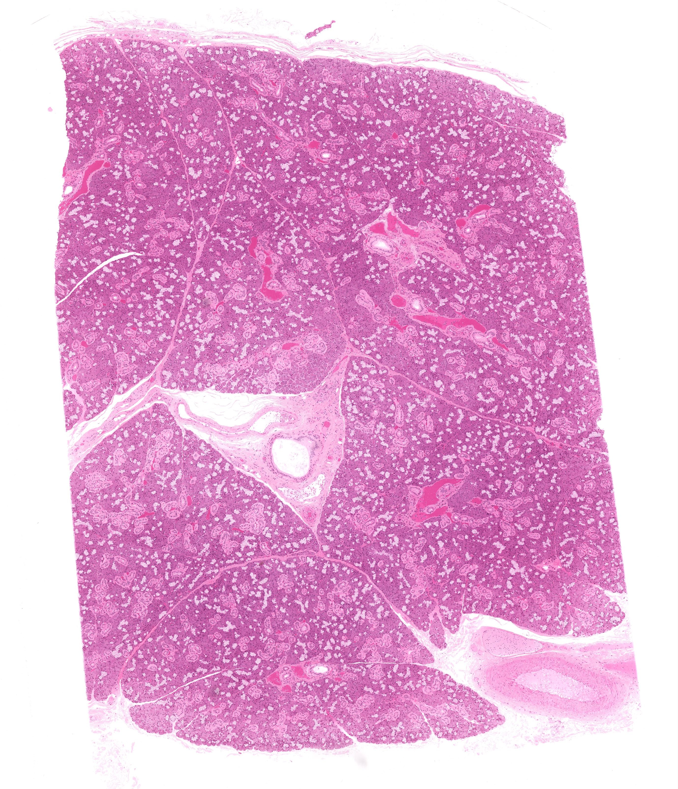
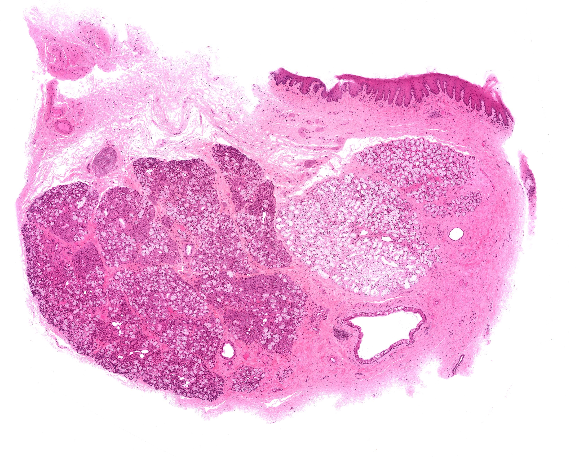
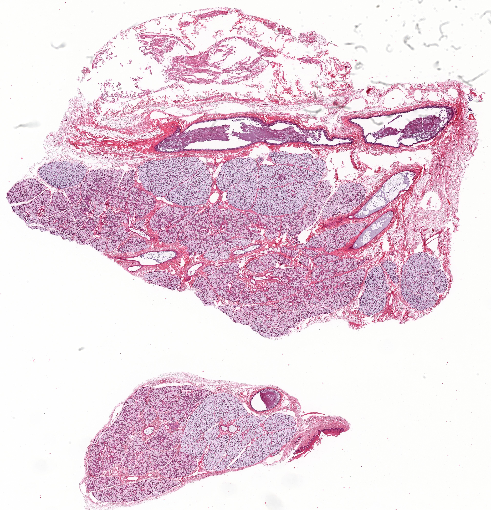
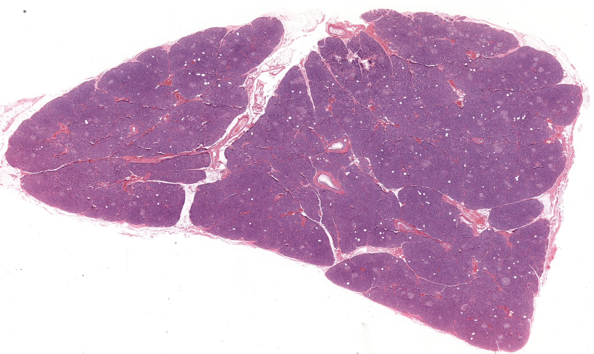
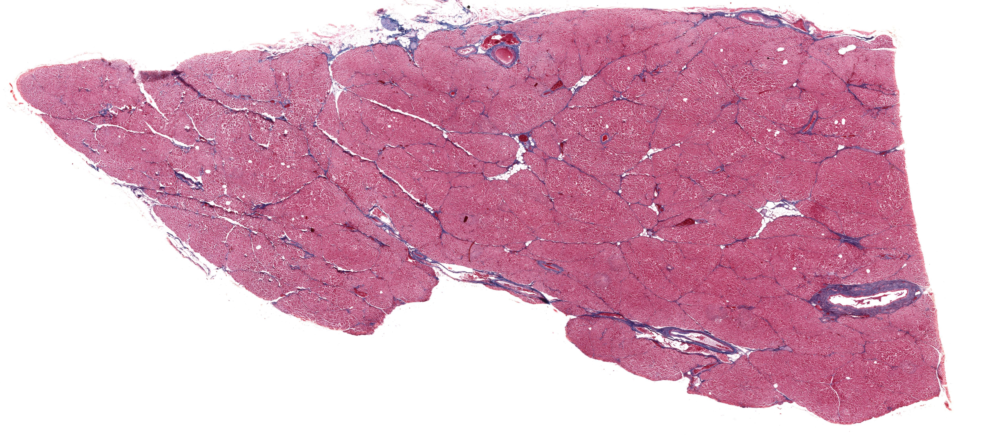
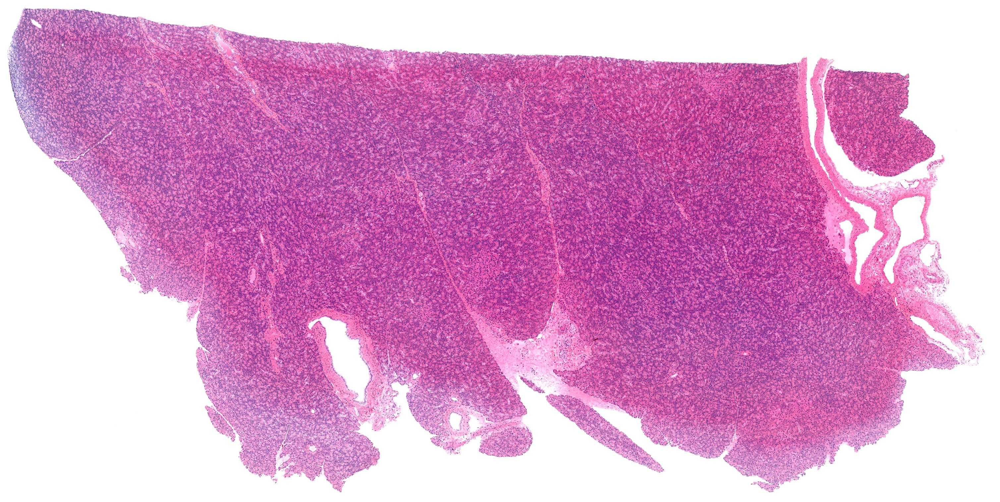
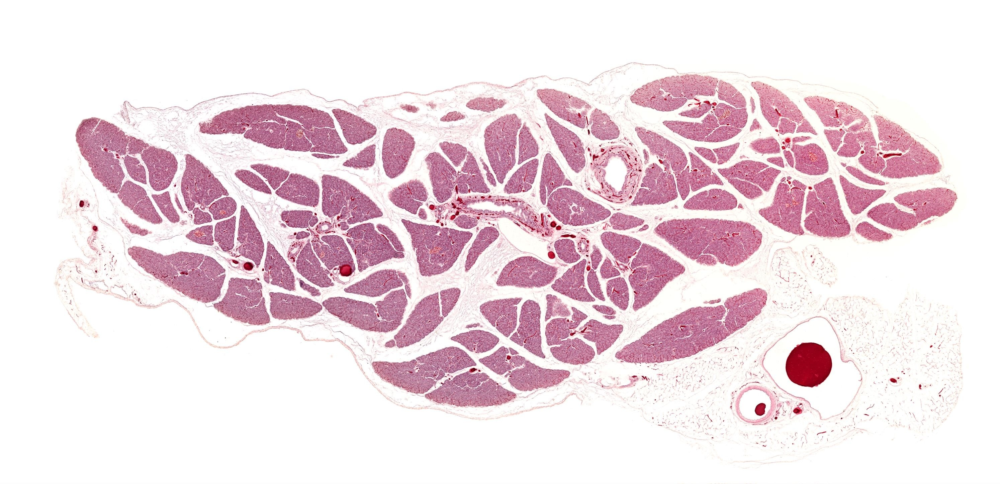
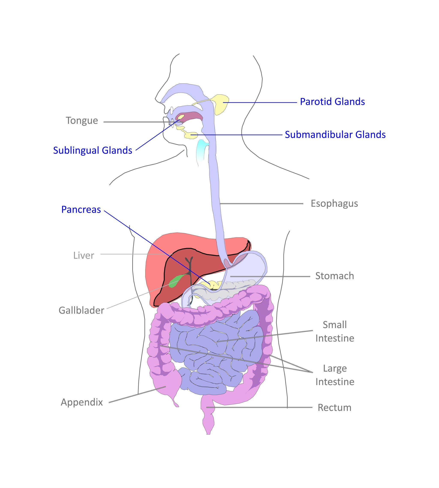

Chapter 12 · 器官系统
外分泌腺
Exocrine Glands · 3 小节 · 10 张切片 · 8 张电镜 · 本地概览 12 张
本章导语
外分泌腺由分泌部和导管两部分组成，分泌物经导管排至体表或器官腔面。本章以三对大唾液腺和胰腺为例：先在腮腺认识纯浆液性腺泡与闰管，再用下颌下腺、舌下腺比较浆液性与黏液性成分的比例及纹状管的发达程度，最后看胰腺的纯浆液性腺泡、泡心细胞和长闰管。掌握腺泡类型与导管分段，就能读懂多数外分泌腺切片。
复习重点
- 掌握浆液性、黏液性和混合性腺泡的结构特点。
- 掌握导管各段的形态，尤其是纹状管基底纵纹的成因。
- 比较三对大唾液腺的腺泡类型与导管特点。
- 掌握胰腺外分泌部的结构及其与唾液腺的差别。
易混淆对比
- 腮腺 vs 胰腺：腮腺有纹状管且无泡心细胞，胰腺闰管长并含泡心细胞
- 浆液性腺泡 vs 黏液性腺泡：胞质嗜碱还是浅染，核圆形还是扁平贴底
- 闰管 vs 纹状管：闰管腔小壁薄无纵纹，纹状管腔大且基底有纵纹
阅读提示：本页中文要点为自编复习笔记，不是原站正文的翻译；标本图像为经作者书面许可保存的中分辨率概览，每张本地图像卡片保留 © 署名与原页面链接，“原站本章/原站切片”可查看高倍与结构标注。本站为 Histology Guide 的非官方中文学习改编版，未经其认可或背书。
唾液腺
Salivary Glands
- 唾液腺由腺泡和导管构成，腺泡分浆液性、黏液性和混合性三类。
- 浆液性腺泡细胞基底部嗜碱，顶部含嗜酸性酶原颗粒。
- 黏液性腺泡细胞染色浅，核扁平贴于基底部。
- 混合性腺泡中浆液性细胞常形成浆半月，附于黏液性腺泡末端。
- 导管依次为闰管、纹状管、小叶间导管和总导管，纹状管基底纵纹由质膜内褶与线粒体形成。
低倍镜低倍镜下先区分腺小叶、小叶间结缔组织与导管
高倍镜高倍镜下按胞质染色和核形区分腺泡类型，并辨认纹状管
易混提示：浆半月切面小且偏于腺泡一侧，容易漏看而把混合性腺误判为纯黏液性。
相关标本 · 5

点击图片放大 · 本地概览
MH 094 Parotid
腮腺
H&E
本地概览
2243×1720
图像 © Histology Guide 及/或原始贡献者 · 非商业教育用途，经许可保存；原页面链接见下方

点击图片放大 · 本地概览
MH 094hr Parotid
腮腺（高倍观察）
H&E
本地概览
3673×4352
图像 © Histology Guide 及/或原始贡献者 · 非商业教育用途，经许可保存；原页面链接见下方

点击图片放大 · 本地概览
MH 095 Submandibular Gland
下颌下腺
H&E
本地概览
2760×3212
图像 © Histology Guide 及/或原始贡献者 · 非商业教育用途，经许可保存；原页面链接见下方

点击图片放大 · 本地概览
MH 096 Sublingual Gland
舌下腺
H&E
本地概览
3395×2638
图像 © Histology Guide 及/或原始贡献者 · 非商业教育用途，经许可保存；原页面链接见下方

点击图片放大 · 本地概览
MHS 265 Sublingual Gland
舌下腺（MHS 265）
H&E
本地概览
4024×4180
图像 © Histology Guide 及/或原始贡献者 · 非商业教育用途，经许可保存；原页面链接见下方
示意图 1 幅（在线查看）
电镜照片 1 张（在线查看）
外分泌胰腺
Exocrine Pancreas
- 胰腺为复管泡状腺，外分泌部的腺泡全为浆液性。
- 腺泡腔内的泡心细胞由闰管上皮伸入形成，胞质淡染。
- 闰管较长，无纹状管，导管逐级汇合为小叶间导管。
- 腺细胞含大量酶原颗粒，基底部富含粗面内质网而嗜碱。
低倍镜低倍镜下确认胰腺小叶和散布其中的浅染胰岛
高倍镜高倍镜下寻找腺泡腔内的泡心细胞与长闰管
易混提示：胰腺腺泡与腮腺腺泡形态相近，区别在于胰腺有泡心细胞且无纹状管。
相关标本 · 4

点击图片放大 · 本地概览
MH 131 Pancreas
胰腺（H&E）
Exocrine Pancreas
H&E
本地概览
2606×1551
图像 © Histology Guide 及/或原始贡献者 · 非商业教育用途，经许可保存；原页面链接见下方

点击图片放大 · 本地概览
MH 132 Pancreas
胰腺（Azan 染色）
Exocrine Pancreas
Azan
本地概览
5031×2190
图像 © Histology Guide 及/或原始贡献者 · 非商业教育用途，经许可保存；原页面链接见下方

点击图片放大 · 本地概览
MHS 211 Pancreas
胰腺（MHS 211）
Exocrine Pancreas
H&E
本地概览
4309×2421
图像 © Histology Guide 及/或原始贡献者 · 非商业教育用途，经许可保存；原页面链接见下方

点击图片放大 · 本地概览
MHS 232 Pancreas
胰腺（MHS 232）
Exocrine Pancreas
H&E
本地概览
3017×1515
图像 © Histology Guide 及/或原始贡献者 · 非商业教育用途，经许可保存；原页面链接见下方
电镜照片 6 张（在线查看）
腺内血管
Vasculature
- 腺内血管沿导管走行分布，形成毛细血管网包绕腺泡。
- 腺泡周围毛细血管多为有孔型，便于摄取分泌物前体。
- 小叶间动脉、静脉与导管伴行，是低倍镜下定位小叶的标志。
低倍镜低倍镜下沿小叶间结缔组织寻找伴行的小血管
高倍镜高倍镜下确认腺泡周围毛细血管与血管内皮形态
易混提示：小叶间血管腔小壁薄，易与导管断面混淆，需看腔内有无血细胞。
相关标本 · 1

点击图片放大 · 本地概览
MHS 296 Pancreas
胰腺（MHS 296）
Dye Perfusion
本地概览
2989×1448
图像 © Histology Guide 及/或原始贡献者 · 非商业教育用途，经许可保存；原页面链接见下方
本章其他图谱

点击图片放大 · 本地概览
Fig 005 Exocrine Glands
（中文名待编写）
本地概览
2048×2281
图像 © Histology Guide 及/或原始贡献者 · 非商业教育用途，经许可保存；原页面链接见下方
本章电镜照片
1 张 · 需在线查看
电镜照片 1 张（在线查看）
自测
7 题 · 自编
先自己回答，再点“显示答案”。标记为易错的项目会进入复习模式。
纹状管基底纵纹是怎样形成的？
概念
上皮细胞基底面的质膜内褶与纵行排列的线粒体共同形成
浆半月出现于哪种腺泡？
概念
混合性腺泡，浆液性细胞附于黏液性腺泡末端呈半月状
腮腺的腺泡类型和导管特点是什么？
概念
纯浆液性腺泡，闰管长，纹状管较短
下颌下腺与舌下腺在腺泡上的主要差别是什么？
对比
下颌下腺以浆液性腺泡为主，舌下腺以黏液性腺泡为主
泡心细胞来源于什么结构？
概念
闰管上皮伸入腺泡腔形成
胰腺外分泌部为什么没有纹状管？
概念
胰腺闰管长而直接汇入小叶间导管，不形成纹状管段
怎样在低倍镜下区分腺小叶与结缔组织间隔？
识别
腺小叶由密集腺泡组成，间隔内有导管、血管和脂肪